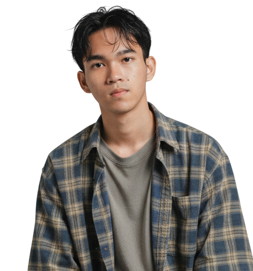
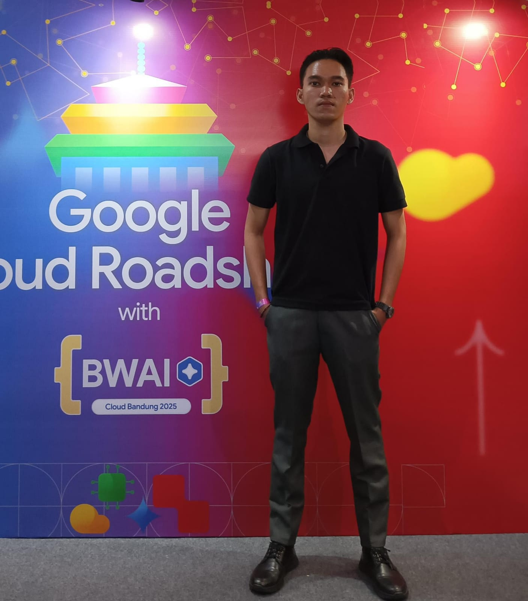
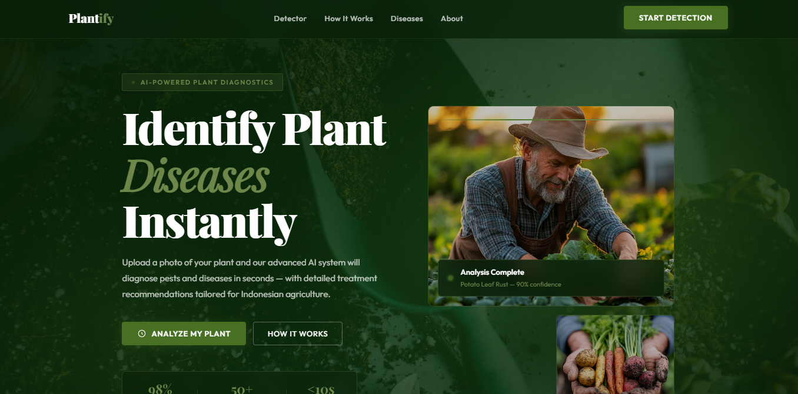
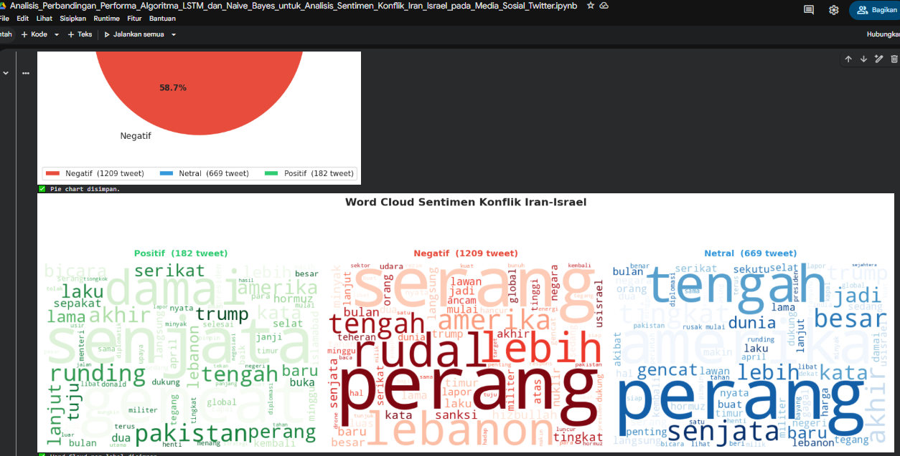

Motivated Informatics Engineering student with a strong focus on Artificial Intelligence and Machine Learning. Skilled in deep learning, computer vision, and NLP — building data-driven solutions that make an impact.

Get to know my journey, experience, and passion for machine learning and AI

I'm Bakti Dwi Pamungkas, a 3rd-year Informatics Engineering student (Semester 6) at Universitas Siliwangi, Sumedang, Indonesia. My academic and project focus is on Artificial Intelligence and Machine Learning — specifically deep learning architectures, computer vision, and natural language processing.
I've completed the Machine Learning Specialization from Coursera (University of Washington) and the Machine Learning Learning Path from DBS Foundation Coding Camp. I apply these skills in end-to-end ML pipelines and real-world applications.
Beyond academics, I'm actively involved in HMIF FT-UNSIL as Vice Chairperson of the BPO, where I lead organizational operations and inter-commission collaboration. I'm passionate about using AI to solve real, meaningful problems.
AI Projects
Certifications
Year Student
My expertise in machine learning, deep learning, and software development
A showcase of my work in machine learning, AI, and data science

Built a full-stack web application enabling farmers to diagnose crop pests and diseases by uploading plant photos. Integrated a multimodal LLM (Gemma Vision via OpenRouter API) with structured prompt engineering to return expert-level diagnosis including pest/disease name, severity level, recommended pesticide, dosage, and treatment steps.

Scraped and curated 2,000+ tweets on the Iran-Israel conflict using a Playwright-based crawler. Built a full NLP preprocessing pipeline (translation, tokenization, stopword removal, stemming with Sastrawi), then trained and compared LSTM with word embeddings vs TF-IDF + Naive Bayes across accuracy, F1-score, and confusion matrix for 3-class sentiment classification.
Interested in collaboration or have a question? Reach out to me
Feel free to reach out for internship opportunities, collaborations, or just to say hello. I'll get back to you as soon as possible.
Sumedang, Indonesia
baktidwipamungkas@gmail.com
+62 896 5642 8641
https://bakti-ai.vercel.app/